Chapter 2 Distributions

Figure 2.1: Ridgeline Chart
2.1 Boxplot
This is the boxplot section of the gallery. If you want to know more about this kind of chart, visit data-to-viz.com. If youre looking for a simple way to implement it in R, pick an example below.
Boxplots are a commonly used chart that compares a distribution of several groups. However, you should keep in mind that data distribution is hidden behind each box. For instance, a normal distribution could look exactly the same as a bimodal distribution. Please read more explanation on this matter, and consider a violin plot or a ridgline chart instead.
2.1.0.1 Boxplot with Individual Data Points
A boxplot summarizes the distribution of a continuous variable. it is often criticized for hiding the underlying distribution of each group. Thus, showing individual observation using jitter on top of boxes is a good practice. This section explains how to do so using ggplot2.
If youre not convinced about that danger of using basic boxplot, please read this section that explains it in depth. Fortunately, ggplot2 makes it a breeze to add invdividual observation on top of boxes thanks to the geom_jitter() function. This function shifts all dots by a random value ranging from 0 to size, avoiding overlaps.
Now, do you see the bimodal distribution hidden behind group B?
# Libraries
library(tidyverse)
library(hrbrthemes)
library(viridis)
# create a dataset
data <- data.frame(
name=c( rep("A",500), rep("B",500), rep("B",500), rep("C",20), rep('D', 100) ),
value=c( rnorm(500, 10, 5), rnorm(500, 13, 1), rnorm(500, 18, 1), rnorm(20, 25, 4), rnorm(100, 12, 1) )
)
# Plot
data %>%
ggplot( aes(x=name, y=value, fill=name)) +
geom_boxplot() +
scale_fill_viridis(discrete = TRUE, alpha=0.6) +
geom_jitter(color="black", size=0.4, alpha=0.9) +
theme_ipsum() +
theme(
legend.position="none",
plot.title = element_text(size=11)
) +
ggtitle("A boxplot with jitter") +
xlab("")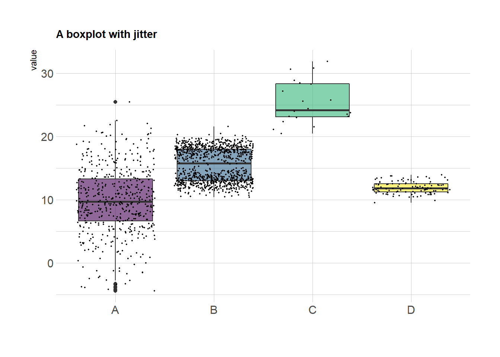
In case youre not convinced, here is how the basic boxplot](https://www.r-graph-gallery.com/boxplot.html) and the basic violin plot look like:
# Boxplot basic
data %>%
ggplot( aes(x=name, y=value, fill=name)) +
geom_boxplot() +
scale_fill_viridis(discrete = TRUE, alpha=0.6, option="A") +
theme_ipsum() +
theme(
legend.position="none",
plot.title = element_text(size=11)
) +
ggtitle("Basic boxplot") +
xlab("")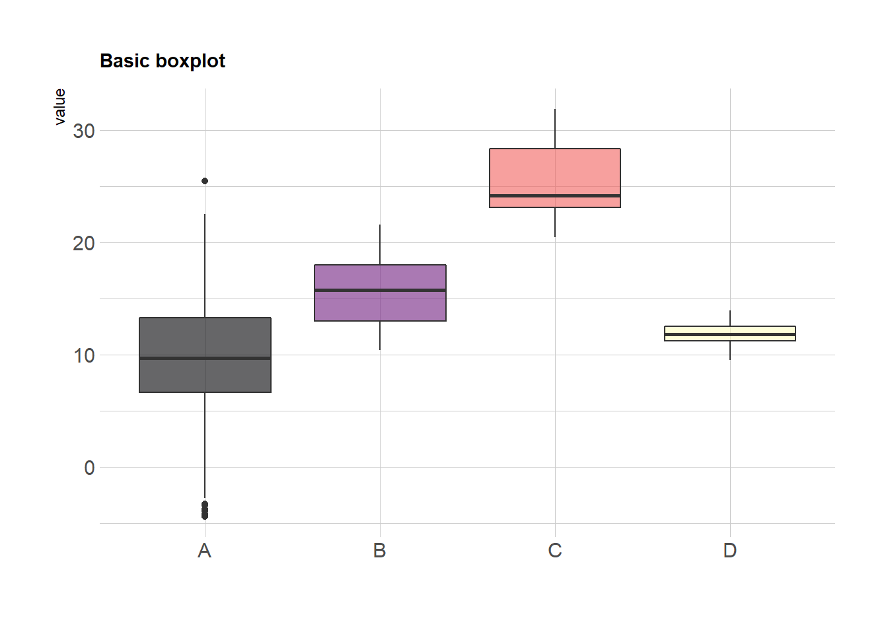
# Violin basic
data %>%
ggplot( aes(x=name, y=value, fill=name)) +
geom_violin() +
scale_fill_viridis(discrete = TRUE, alpha=0.6, option="A") +
theme_ipsum() +
theme(
legend.position="none",
plot.title = element_text(size=11)
) +
ggtitle("Violin chart") +
xlab("")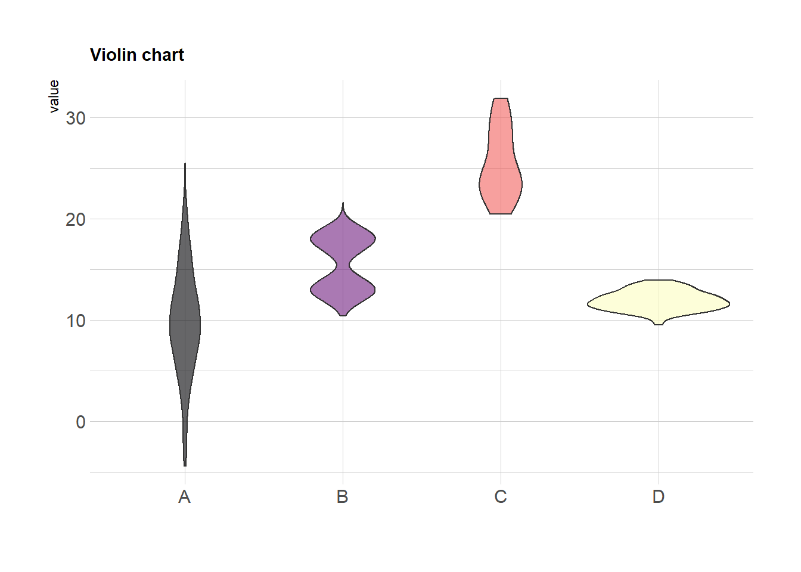
2.1.1 Ggplot2
Boxplot are built thanks to the geom_boxplot() geom of ggplot2. See its basic usage on the first example below. Note that reordering groups is an important step to get a more insightful figure. Also, showing individual data points with jittering is a good way to avoid hiding the underlying distribution.
2.1.1.1 Basic Ggplot2 Boxplot
The ggplot2 library allows to make a boxplot using geom_boxplot(). You have to specify a quantitative variable for the Y axis, and a qualitative variable for the X axis ( a group).
# Load ggplot2
library(ggplot2)
# The mtcars dataset is natively available
# head(mtcars)
# A really basic boxplot.
ggplot(mtcars, aes(x=as.factor(cyl), y=mpg)) +
geom_boxplot(fill="slateblue", alpha=0.2) +
xlab("cyl")
2.1.2 Ggplot2 Boxplot Parameters
This chart extends the previous most basic boxplot described in graph #262. It describes the option you can apply to the geom_boxplot() function to custom the general chart appearance.
Note on notches: useful to compare groups: if no overlap between 2 groups, medians are significantly different.
# Load ggplot2
library(ggplot2)
# The mpg dataset is natively available
#head(mpg)
# geom_boxplot proposes several arguments to custom appearance
ggplot(mpg, aes(x=class, y=hwy)) +
geom_boxplot(
# custom boxes
color="blue",
fill="blue",
alpha=0.2,
# Notch?
notch=TRUE,
notchwidth = 0.8,
# custom outliers
outlier.colour="red",
outlier.fill="red",
outlier.size=3
)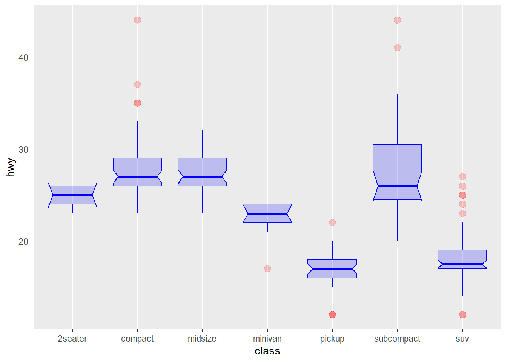
2.1.3 Control ggplot2 Boxplot Colors
A boxplot summarizes the distribution of a continuous variable. Different color scales can be apply to it, and this section describes how to do so using the ggplot2 library. It is notably described how to highlight a specific group of interest.
2.1.3.1 General Color Customization
These for examples illustrate the most common color scales used in boxplot.
Note the use of RcolorBrewer and viridis to automatically generate nice color palette.
# library
library(ggplot2)
# The mtcars dataset is natively available in R
#head(mpg)
# Top Left: Set a unique color with fill, colour, and alpha
ggplot(mpg, aes(x=class, y=hwy)) +
geom_boxplot(color="red", fill="orange", alpha=0.2)# Top Right: Set a different color for each group
ggplot(mpg, aes(x=class, y=hwy, fill=class)) +
geom_boxplot(alpha=0.3) +
theme(legend.position="none")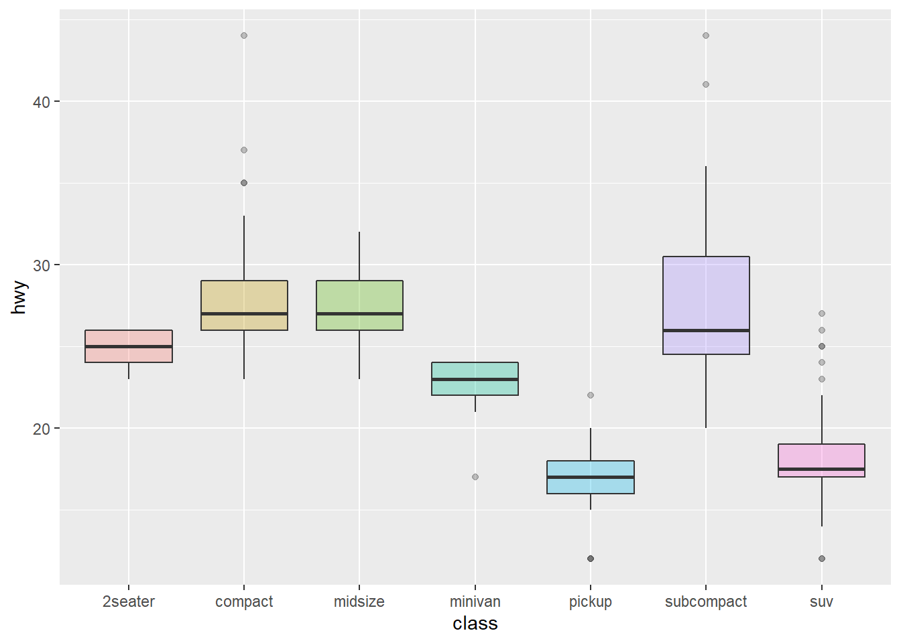
# Bottom Left
ggplot(mpg, aes(x=class, y=hwy, fill=class)) +
geom_boxplot(alpha=0.3) +
theme(legend.position="none") +
scale_fill_brewer(palette="BuPu")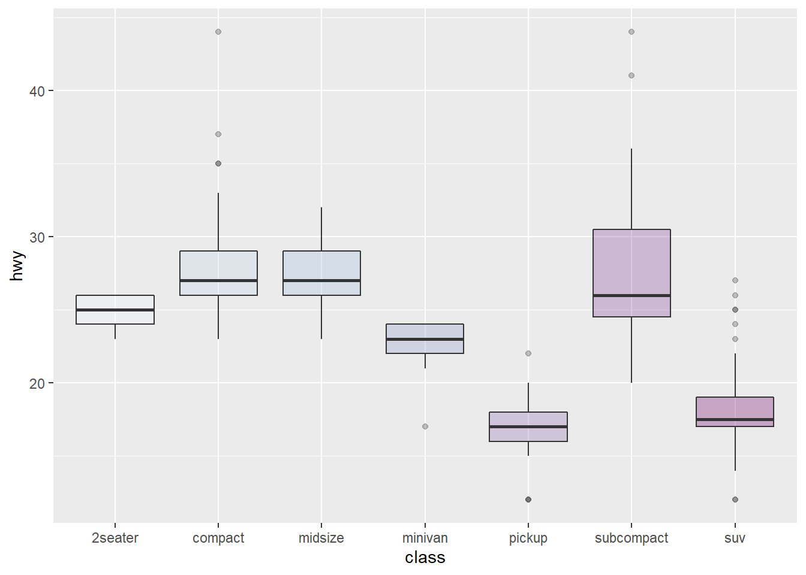
# Bottom Right
ggplot(mpg, aes(x=class, y=hwy, fill=class)) +
geom_boxplot(alpha=0.3) +
theme(legend.position="none") +
scale_fill_brewer(palette="Dark2")2.1.4 Highlighting a Group
Highlighting the main message conveid by your chart is an important step in dataviz. If your story focuses on a specific group, you should highlight it in your boxplot.
To do so, first create a new column with mutate where you store the binary information: highlight or not. Then just provide this column to the fill argument of ggplot2 and eventually custom the appearance of the highlighted group with scale_fill_manual and scale_alpha_manual.
# Libraries
library(ggplot2)
library(dplyr)
library(hrbrthemes)
# Work with the natively available mpg dataset
mpg %>%
# Add a column called 'type': do we want to highlight the group or not?
mutate( type=ifelse(class=="subcompact","Highlighted","Normal")) %>%
# Build the boxplot. In the 'fill' argument, give this column
ggplot( aes(x=class, y=hwy, fill=type, alpha=type)) +
geom_boxplot() +
scale_fill_manual(values=c("#69b3a2", "grey")) +
scale_alpha_manual(values=c(1,0.1)) +
theme_ipsum() +
theme(legend.position = "none") +
xlab("")
2.1.5 Grouped Boxplot
A grouped boxplot is a boxplot where categories are organized in groups and subgroups.
Here we visualize the distribution of 7 groups (called A to G) and 2 subgroups (called low and high). Note that the group must be called in the X argument of ggplot2. The subgroup is called in the fill argument.
# library
library(ggplot2)
# create a data frame
variety=rep(LETTERS[1:7], each=40)
treatment=rep(c("high","low"),each=20)
note=seq(1:280)+sample(1:150, 280, replace=T)
data=data.frame(variety, treatment , note)
# grouped boxplot
ggplot(data, aes(x=variety, y=note, fill=treatment)) +
geom_boxplot()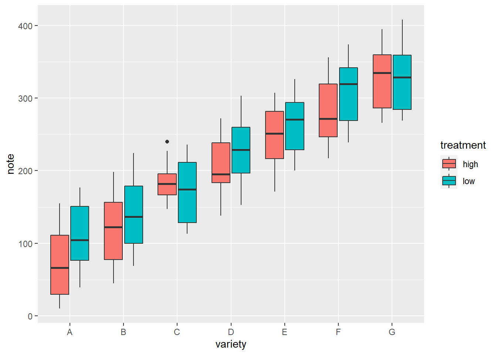
2.1.6 Using Small Multiple
Note that an alternative to grouped boxplot is to use faceting: each subgroup (left) or each group (right) is represented in a distinct panel.
# One box per treatment
p1 <- ggplot(data, aes(x=variety, y=note, fill=treatment)) +
geom_boxplot() +
facet_wrap(~treatment)
# one box per variety
p2 <- ggplot(data, aes(x=variety, y=note, fill=treatment)) +
geom_boxplot() +
facet_wrap(~variety, scale="free")p1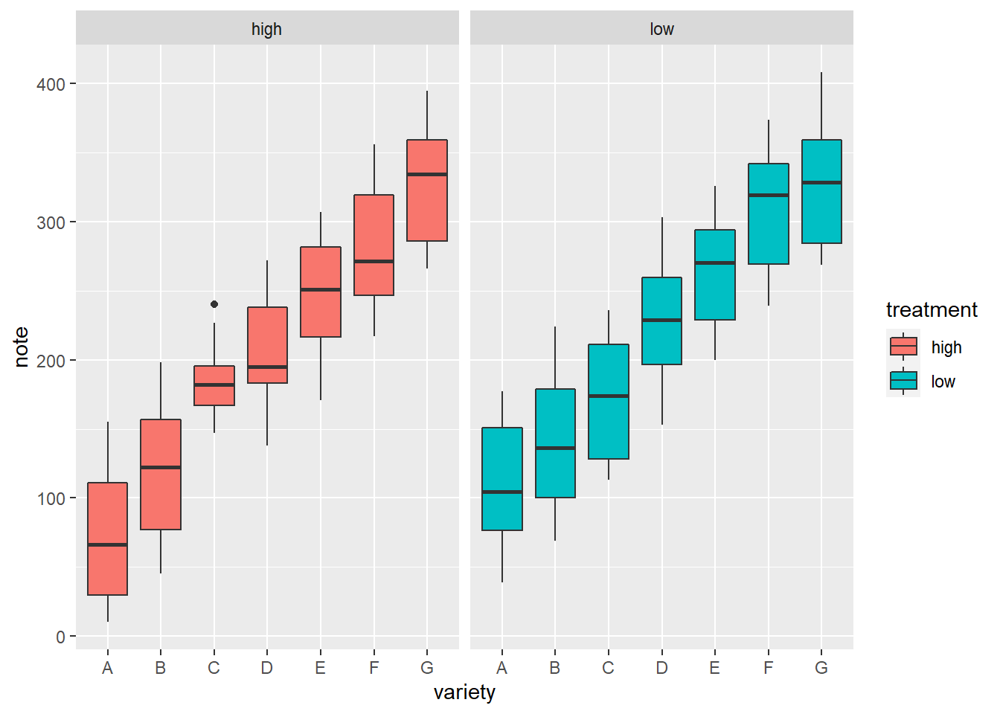
p2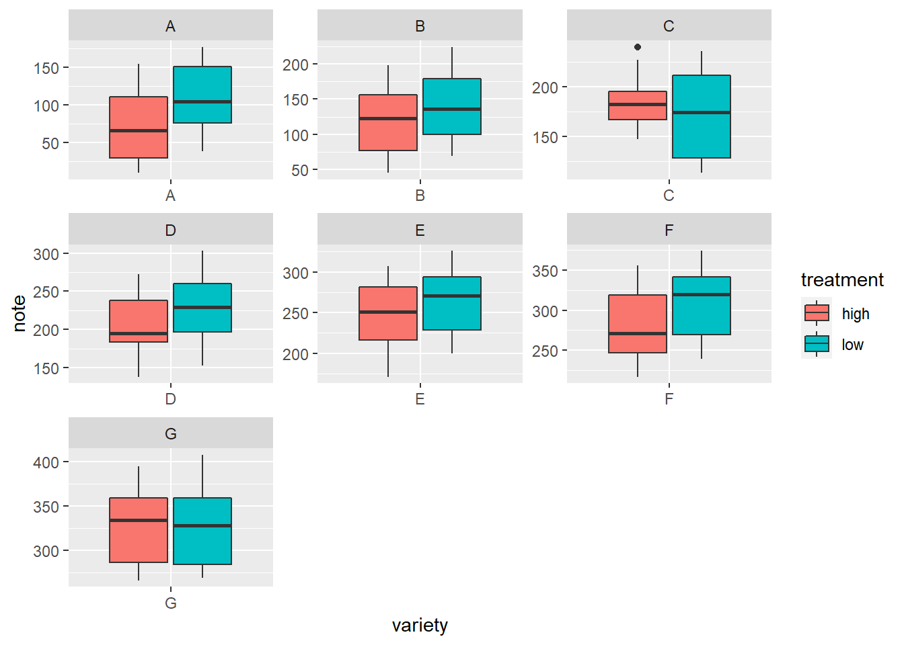
2.1.7 Ggplot2 Boxplot with Variable Width
Boxplots hide the category sample sizes. One way to tackle this issue is to build boxplot with width proportionnal to sample size. Here is how to do it with R and ggplot2. Boxplot are often critized for hiding the underlying distribution of each category. Since individual data points are hidden, it is also impossible to know what sample size is available for each category.
In this example, box widths are proportional to sample size thanks to the varwidth option. On top of that, the exact sample size is added to the X axis labels for more accuracy.
# library
library(ggplot2)
# create data
names <- c(rep("A", 20) , rep("B", 5) , rep("C", 30), rep("D", 100))
value <- c( sample(2:5, 20 , replace=T) , sample(4:10, 5 , replace=T), sample(1:7, 30 , replace=T), sample(3:8, 100 , replace=T) )
data <- data.frame(names,value)
# prepare a special xlab with the number of obs for each group
my_xlab <- paste(levels(data$names),"\n(N=",table(data$names),")",sep="")
# plot
ggplot(data, aes(x=names, y=value, fill=names)) +
geom_boxplot(varwidth = TRUE, alpha=0.2) +
theme(legend.position="none") +
scale_x_discrete(labels=my_xlab)2.1.8 Ggplot2 Boxplot from Continuous Variable
Lets say we want to study the relationship between 2 numeric variables. It is possible to cut on of them in different bins, and to use the created groups to build a boxplot.
Here, the numeric variable called carat from the diamonds dataset in cut in 0.5 length bins thanks to the cut_width function. Then, we just need to provide the newly created variable to the X axis of ggplot2.
# library
library(ggplot2)
library(dplyr)
library(hrbrthemes)
# Start with the diamonds dataset, natively available in R:
p <- diamonds %>%
# Add a new column called 'bin': cut the initial 'carat' in bins
mutate( bin=cut_width(carat, width=0.5, boundary=0) ) %>%
# plot
ggplot( aes(x=bin, y=price) ) +
geom_boxplot(fill="#69b3a2") +
theme_ipsum() +
xlab("Carat")
p2.1.9 Ggplot2 Boxplot with Mean Value
Ggplot2 allows to show the average value of each group using the stat_summary() function. No more need to calculate your mean values before plotting.
# Library
library(ggplot2)
# create data
names=c(rep("A", 20) , rep("B", 8) , rep("C", 30), rep("D", 80))
value=c( sample(2:5, 20 , replace=T) , sample(4:10, 8 , replace=T), sample(1:7, 30 , replace=T), sample(3:8, 80 , replace=T) )
data=data.frame(names,value)
# plot
p <- ggplot(data, aes(x=names, y=value, fill=names)) +
geom_boxplot(alpha=0.7) +
stat_summary(fun.y=mean, geom="point", shape=20, size=14, color="red", fill="red") +
theme(legend.position="none") +
scale_fill_brewer(palette="Set1")
p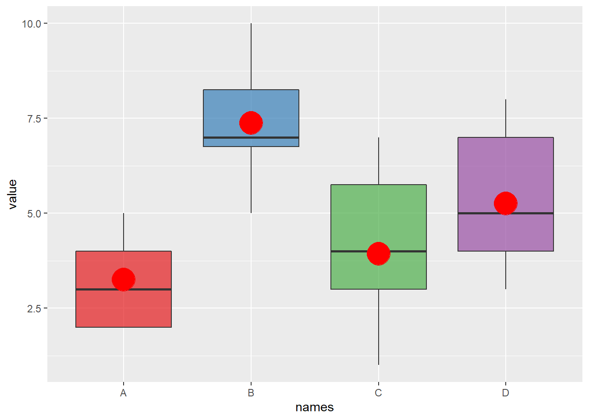
2.1.10 Basic R
Build boxplot with base R is totally double thanks to the boxplot() function. A boxplot summarizes the distribution of a numeric variable for one or several groups. It can be useful to add colors to specific groups to highlight them. For example, positive and negative controls are likely to be in different colors.
#Create data
names <- c(rep("Maestro", 20) , rep("Presto", 20) ,
rep("Nerak", 20), rep("Eskimo", 20), rep("Nairobi", 20), rep("Artiko", 20))
value <- c( sample(3:10, 20 , replace=T) , sample(2:5, 20 , replace=T) ,
sample(6:10, 20 , replace=T), sample(6:10, 20 , replace=T) ,
sample(1:7, 20 , replace=T), sample(3:10, 20 , replace=T) )
data <- data.frame(names,value)
# Prepare a vector of colors with specific color for Nairobi and Eskimo
myColors <- ifelse(levels(data$names)=="Nairobi" , rgb(0.1,0.1,0.7,0.5) ,
ifelse(levels(data$names)=="Eskimo", rgb(0.8,0.1,0.3,0.6),
"grey90" ) )
# Build the plot
boxplot(data$value ~ data$names ,
col=myColors ,
ylab="disease" , xlab="- variety -")
# Add a legend
legend("bottomleft", legend = c("Positiv control","Negativ control") ,
col = c(rgb(0.1,0.1,0.7,0.5) , rgb(0.8,0.1,0.3,0.6)) , bty = "n", pch=20 , pt.cex = 3, cex = 1, horiz = FALSE, inset = c(0.03, 0.1))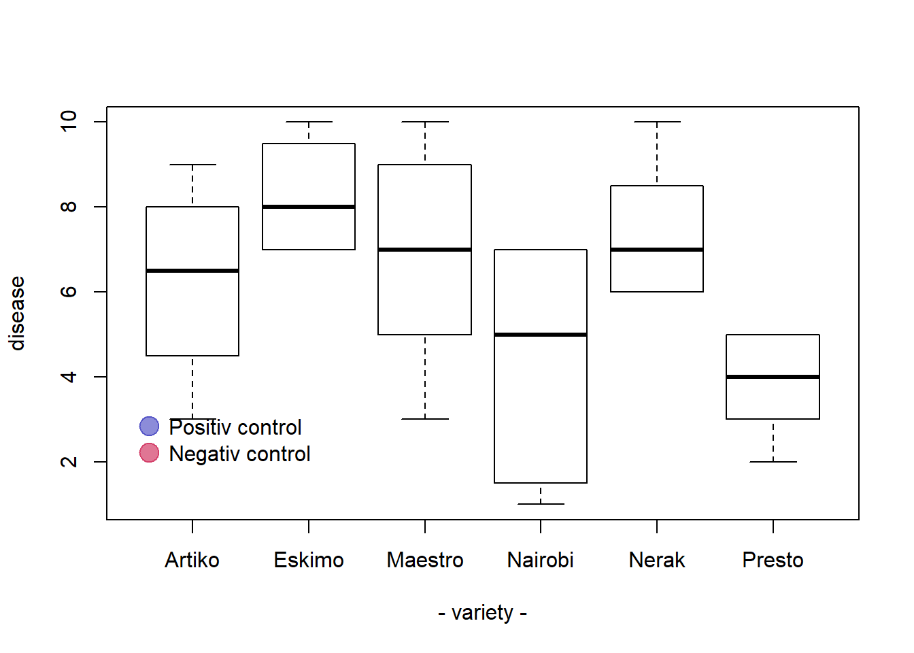
2.1.11 Basic R: X Axis Labels on Several Lines
It is a common practice to display the X axis label on several lines. Here is an example applied to a boxplot.
It can be handy to display X axis labels on several lines. For instance, to add the number of values present in each box of a boxplot.
How it works:
- Change the names of your categories using the
names()function. - Use
\nto start new line. - Increase the distance between the labels and the X axis with the
mgpargument of thepar()function. It avoids overlap with the axis.
Note: mgp is a numeric vector of length 3, which sets the axis label locations relative to the edge of the inner plot window. Default value : c(3,1,0). First value : location the labels (xlab and ylab in plot). Second value : location of the tick-mark labels (what we want to lower). Third Value : position of the tick marks
# Create 2 vectors
a <- sample(2:24, 20 , replace=T)
b <- sample(4:14, 8 , replace=T)
# Make a list of these 2 vectors
C <- list(a,b)
# Change the names of the elements of the list :
names(C) <- c(paste("Category 1\n n=" , length(a) , sep=""), paste("Category 2\n n=" , length(b) , sep=""))
# Change the mgp argument: avoid text overlaps axis
par(mgp=c(3,2,0))
# Final Boxplot
boxplot(C , col="#69b3a2" , ylab="value" )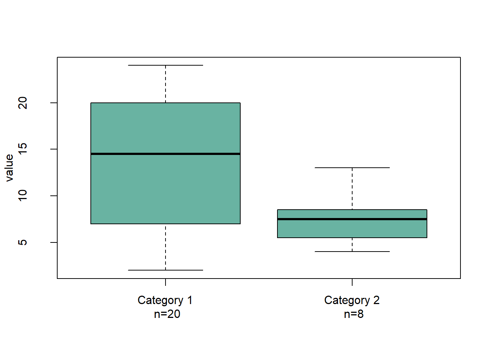
2.1.12 Boxplot with Jitter in Base R
Boxplot hides the distribution behind each group. This section show how to tackle this issue in base R, adding individual observation using dots with jittering. Boxplot can be dangerous: the exact distribution of each group is hidden behind boxes as explained in data-to-viz.
If the amount of observation is not too high, you can add individual observations on top of boxes, using jittering to avoid dot overlap.
In base R, it is done manually creating a function that adds dot one by one, computing a random X position for all of them.
library(formatR)
# Create data
names <- c(rep("A", 80) , rep("B", 50) , rep("C", 70))
value <- c( rnorm(80 , mean=10 , sd=9) , rnorm(50 , mean=2 , sd=15) , rnorm(70 , mean=30 , sd=10) )
data <- data.frame(names,value)
# Basic boxplot
boxplot(data$value ~ data$names , col=terrain.colors(4) )
# Add data points
mylevels <- levels(data$names)
#levelProportions <- summary(data$names)/nrow(data)
for(i in 1:length(mylevels)){
thislevel <- mylevels[i]
thisvalues <- data[data$names==thislevel, "value"]
# take the x-axis indices and add a jitter, proportional to the N in each level
myjitter <- jitter(rep(i, length(thisvalues)), amount=levelProportions[i]/2)
points(myjitter, thisvalues, pch=20, col=rgb(0,0,0,.9))
}2.1.13 Ordering Boxplots in Base R
This section is dedicated to boxplot ordering in base R. It describes 3 common use cases of reordering issue with code and explanation.
2.1.13.1 Reordering Category by Median
The most common need is to reorder categories by increasing median. It allows to quickly spot what group has the highest value and how categories are ranked. It is accomplished using the reorder() function in combination with the with() function as suggested below:
# Create data : 7 varieties / 20 samples per variety / a numeric value for each sample
variety <- rep( c("soldur", "silur", "lloyd", "pescadou", "X4582", "Dudur", "Classic"), each=20)
note <- c( sample(2:5, 20 , replace=T) , sample(6:10, 20 , replace=T),
sample(1:7, 30 , replace=T), sample(3:10, 70 , replace=T) )
data <- data.frame(variety, note)
# Create a vector named "new_order" containing the desired order
new_order <- with(data, reorder(variety , note, median , na.rm=T))
# Draw the boxplot using this new order
boxplot(data$note ~ new_order , ylab="sickness" , col="#69b3a2", boxwex=0.4 , main="")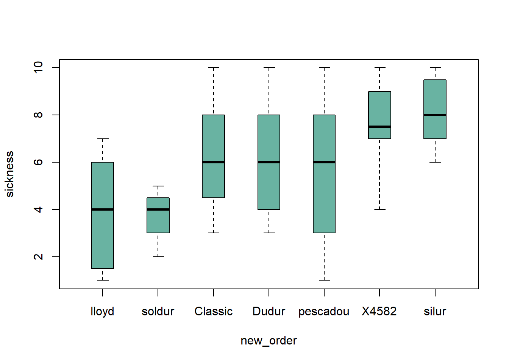
2.1.14 Give a Specific Order
Boxplot categories are provided in a column of the input data frame. This column needs to be a factor, and has several levels. Categories are displayed on the chart following the order of this factor, often in alphabetical order.
Sometimes, we need to show groups in a specific order (A,D,C,B here). This can be done by reordering the levels, using the factor() function.
#Creating data
names <- c(rep("A", 20) , rep("B", 20) , rep("C", 20), rep("D", 20))
value <- c( sample(2:5, 20 , replace=T) , sample(6:10, 20 , replace=T),
sample(1:7, 20 , replace=T), sample(3:10, 20 , replace=T) )
data <- data.frame(names,value)
# Classic boxplot (A-B-C-D order)
# boxplot(data$value ~ data$names)
# I reorder the groups order : I change the order of the factor data$names
data$names <- factor(data$names , levels=c("A", "D", "C", "B"))
#The plot is now ordered !
boxplot(data$value ~ data$names , col=rgb(0.3,0.5,0.4,0.6) , ylab="value" ,
xlab="names in desired order")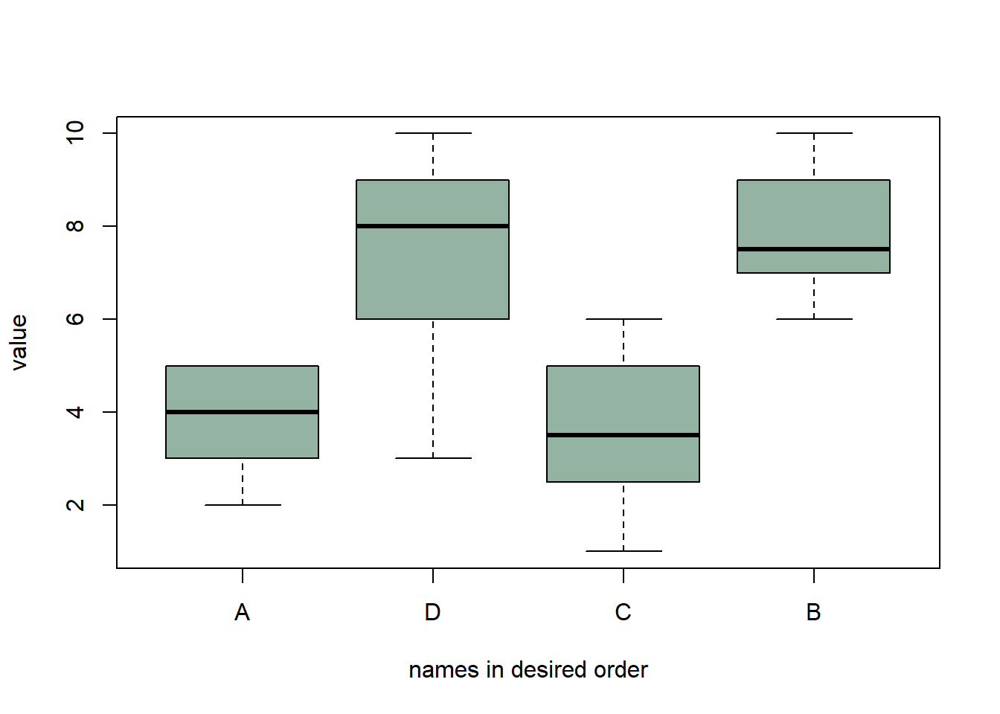
2.1.15 Grouped and Ordered Boxplot
In a grouped boxplot, categories are organized in groups and subgroups. For instance, lets take several varieties (group) that are grown in high or low temperature (subgroup).
Here both subgroups are represented one beside each other, and groups are ranked by increasing median:
# Create dummy data
variety <- rep( c("soldur", "silur", "lloyd", "pescadou", "X4582", "Dudur", "Classic"), each=40)
treatment <- rep(c(rep("high" , 20) , rep("low" , 20)) , 7)
note <- c( rep(c(sample(0:4, 20 , replace=T) , sample(1:6, 20 , replace=T)),2),
rep(c(sample(5:7, 20 , replace=T), sample(5:9, 20 , replace=T)),2),
c(sample(0:4, 20 , replace=T) , sample(2:5, 20 , replace=T),
rep(c(sample(6:8, 20 , replace=T) , sample(7:10, 20 , replace=T)),2) ))
data=data.frame(variety, treatment , note)
# Reorder varieties (group) (mixing low and high treatments for the calculations)
new_order <- with(data, reorder(variety , note, mean , na.rm=T))
# Then I make the boxplot, asking to use the 2 factors : variety (in the good order) AND treatment :
par(mar=c(3,4,3,1))
myplot <- boxplot(note ~ treatment*new_order , data=data ,
boxwex=0.4 , ylab="sickness",
main="sickness of several wheat lines" ,
col=c("slateblue1" , "tomato") ,
xaxt="n")
# To add the label of x axis
my_names <- sapply(strsplit(myplot$names , '\\.') , function(x) x[[2]] )
my_names <- my_names[seq(1 , length(my_names) , 2)]
axis(1,
at = seq(1.5 , 14 , 2),
labels = my_names ,
tick=FALSE , cex=0.3)
# Add the grey vertical lines
for(i in seq(0.5 , 20 , 2)){
abline(v=i,lty=1, col="grey")
}
# Add a legend
legend("bottomright", legend = c("High treatment", "Low treatment"),
col=c("slateblue1" , "tomato"),
pch = 15, bty = "n", pt.cex = 3, cex = 1.2, horiz = F, inset = c(0.1, 0.1))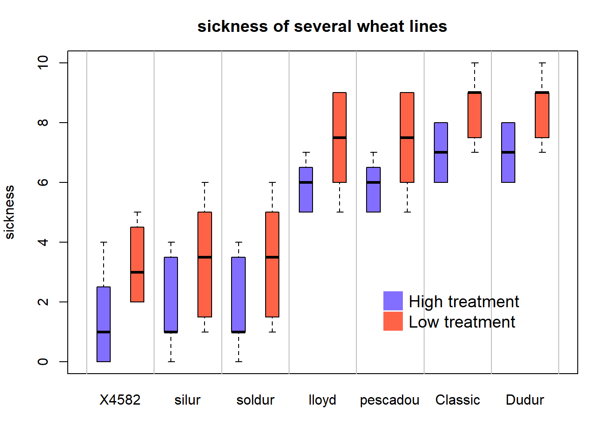
2.1.16 Add Text over Boxplot in Base R
This examples demonstrates how to build a boxplot with sample size written on top of each box. It is useful to indicate what sample size is hidden behind each box. Basic R implementation.
The first challenge here is to recover the position of the top part of each box. This is done by saving the boxplot() result in an object (called boundaries here). Now, typing boundaries$stats gives a dataframe with all information concerning boxes.
Then, it is possible to use the text function to add labels on top of each box. This function takes 3 inputs:
- x axis positions of the labels. In our case, it will be 1,2,3,4 for 4 boxes.
- y axis positions, available in the boundaries$stats object.
- text of the labels : the number of value per group or whatever else.
# Dummy data
names <- c(rep("A", 20) , rep("B", 8) , rep("C", 30), rep("D", 80))
value <- c( sample(2:5, 20 , replace=T) , sample(4:10, 8 , replace=T),
sample(1:7, 30 , replace=T), sample(3:8, 80 , replace=T) )
data <- data.frame(names,value)
# Draw the boxplot. Note result is also stored in a object called boundaries
boundaries <- boxplot(data$value ~ data$names , col="#69b3a2" , ylim=c(1,11))
# Now you can type boundaries$stats to get the boundaries of the boxes
# Add sample size on top
nbGroup <- nlevels(data$names)
text(
x=c(1:nbGroup),
y=boundaries$stats[nrow(boundaries$stats),] + 0.5,
paste("n = ",table(data$names),sep="")
)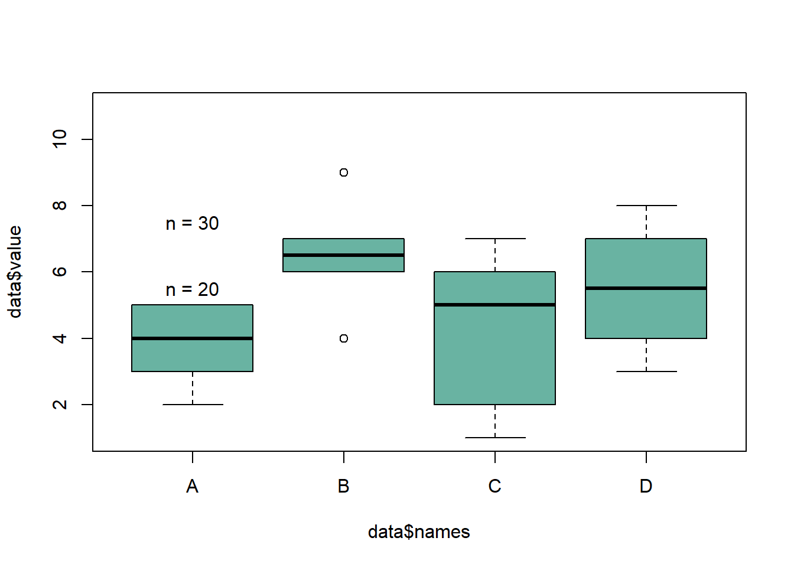
2.1.17 Tukey Test and Boxplot in R
A Tukey test compares all possible pair of means for a set of categories. This section explains how to perform it in R and host to represent the result on a boxplot.
Tukey test is a single-step multiple comparison procedure and statistical test. It is a section-hoc analysis, what means that it is used in conjunction with an ANOVA. It allows to find means of a factor that are significantly different from each other, comparing all possible pairs of means with a t-test like method. (Read more for the exact procedure)
In R, the multcompView allows to run the Tukey test thanks to the TukeyHSD() function. It also offers a chart that shows the mean difference for each pair of group.
# library
library(multcompView)
# Create data
set.seed(1)
treatment <- rep(c("A", "B", "C", "D", "E"), each=20)
value=c( sample(2:5, 20 , replace=T) , sample(6:10, 20 , replace=T), sample(1:7, 20 , replace=T), sample(3:10, 20 , replace=T) , sample(10:20, 20 , replace=T) )
data=data.frame(treatment,value)
# What is the effect of the treatment on the value ?
model=lm( data$value ~ data$treatment )
ANOVA=aov(model)
# Tukey test to study each pair of treatment :
TUKEY <- TukeyHSD(x=ANOVA, 'data$treatment', conf.level=0.95)
# Tuckey test representation :
plot(TUKEY , las=1 , col="brown")2.1.18 Tukey test result on top of boxplot
The previous chart showed no significant difference between groups A and C, and between D and B.
It is possible to represent this information in a boxplot. Group A and C are represented using a similar way: same color, and same b letter on top. And so on for B-D and for E.
Tukey test results on top of Bhart showed no significant difference between groups A and C, and between D and B.
It is possible to represent this information in a boxplot. Group A and C are represented using a similar way: same color, and same b letter on top. And so on for B-D and for E.
# I need to group the treatments that are not different each other together.
generate_label_df <- function(TUKEY, variable){
# Extract labels and factor levels from Tukey section-hoc
Tukey.levels <- TUKEY[[variable]][,4]
Tukey.labels <- data.frame(multcompLetters(Tukey.levels)['Letters'])
#I need to put the labels in the same order as in the boxplot :
Tukey.labels$treatment=rownames(Tukey.labels)
Tukey.labels=Tukey.labels[order(Tukey.labels$treatment) , ]
return(Tukey.labels)
}
# Apply the function on my dataset
LABELS <- generate_label_df(TUKEY , "data$treatment")
# A panel of colors to draw each group with the same color :
my_colors <- c(
rgb(143,199,74,maxColorValue = 255),
rgb(242,104,34,maxColorValue = 255),
rgb(111,145,202,maxColorValue = 255)
)
# Draw the basic boxplot
a <- boxplot(data$value ~ data$treatment , ylim=c(min(data$value) , 1.1*max(data$value)) , col=my_colors[as.numeric(LABELS[,1])] , ylab="value" , main="")
# I want to write the letter over each box. Over is how high I want to write it.
over <- 0.1*max( a$stats[nrow(a$stats),] )
#Add the labels
text( c(1:nlevels(data$treatment)) , a$stats[nrow(a$stats),]+over , LABELS[,1] , col=my_colors[as.numeric(LABELS[,1])] )Note: Tukey test is also called: Tukeys range test / Tukey method / Tukeys honest significance test / Tukeys HSD (honest significant difference) test / Tukey-Kramer method
2.1.19 Control Box Type with the bty Option
The bty option of the par() function allows to control the box style of base R charts. This section provides a few examples illustrating how this option works.
The bty option of the par() function allows to custom the box around the plot.
Several letters are possible. Shape of the letter represents the boundaries:
o: complete box (default parameter),n: no box7: top + rightL: bottom + leftC: top + left + bottomU: left + bottom + right
# Cut the screen in 4 parts
par(mfrow=c(2,2))
#Create data
a=seq(1,29)+4*runif(29,0.4)
b=seq(1,29)^2+runif(29,0.98)
# First graph
par(bty="l")
boxplot(a , col="#69b3a2" , xlab="bottom & left box")
# Second
par(bty="o")
boxplot(b , col="#69b3a2" , xlab="complete box", horizontal=TRUE)
# Third
par(bty="c")
boxplot(a , col="#69b3a2" , xlab="up & bottom & left box", width=0.5)
# Fourth
par(bty="n")
boxplot(a , col="#69b3a2" , xlab="no box")2.1.20 Split Base R Plot Window with layout()
The layout() function of R allows to split the plot window in areas with custom sizes. Here are a few examples illustrating how to use it with reproducible code and explanation. Layout divides the device up into as many rows and columns as there are in matrix mat.
Here a matrix is created with matrix(c(1,2), ncol=1) -> 1 column, 2 rows. This is what I get in the chart!
2.1.20.1 2 Rows
Note: this could be done using par(mfrow=c(1,2)) as well. But this option does not allow the customization well see further in this section.
# Dummy data
a <- seq(129,1)+4*runif(129,0.4)
b <- seq(1,129)^2+runif(129,0.98)
# Create the layout
nf <- layout( matrix(c(1,2), ncol=1) )
# Fill with plots
hist(a , breaks=30 , border=F , col=rgb(0.1,0.8,0.3,0.5) , xlab="distribution of a" , main="")
boxplot(a , xlab="a" , col=rgb(0.8,0.8,0.3,0.5) , las=2)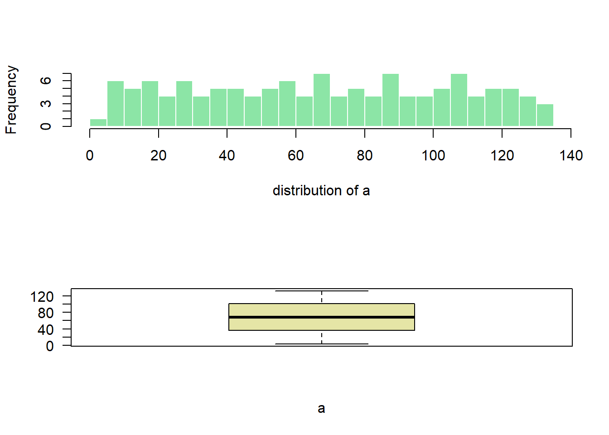
2.1.20.2 2 Columns
Here I create the matrix with matrix(c(1,2), ncol=2) -> 2 columns, 1 row. This is what I get in the chart!
Note: if you swap to c(2,1), second chart will be on top, first at the bottom
# Dummy data
a <- seq(129,1)+4*runif(129,0.4)
b <- seq(1,129)^2+runif(129,0.98)
# Create the layout
nf <- layout( matrix(c(1,2), ncol=2) )
# Fill with plots
hist(a , breaks=30 , border=F , col=rgb(0.1,0.8,0.3,0.5) , xlab="distribution of a" , main="")
boxplot(a , xlab="a" , col=rgb(0.8,0.8,0.3,0.5) , las=2)2.1.21 Subdivide Second Row
matrix(c(1,1,2,3), nrow=2) creates a matrix of 2 rows and 2 columns. First 2 panels will be for the first chart, the third for chart2 and the last for chart 3.
# Dummy data
a <- seq(129,1)+4*runif(129,0.4)
b <- seq(1,129)^2+runif(129,0.98)
# Create the layout
nf <- layout( matrix(c(1,1,2,3), nrow=2, byrow=TRUE) )
# Fill with plots
hist(a , breaks=30 , border=F , col=rgb(0.1,0.8,0.3,0.5) , xlab="distribution of a" , main="")
boxplot(a , xlab="a" , col=rgb(0.8,0.8,0.3,0.5) , las=2)
boxplot(b , xlab="b" , col=rgb(0.4,0.2,0.3,0.5) , las=2)2.1.22 Custom Proportions
You can custom columns and row proportions with widths and heights.
Here, widths=c(3,1) means first column takes three quarters of the plot window width, second takes one quarter.
# Dummy data
a <- seq(129,1)+4*runif(129,0.4)
b <- seq(1,129)^2+runif(129,0.98)
# Set the layout
nf <- layout(
matrix(c(1,1,2,3), ncol=2, byrow=TRUE),
widths=c(3,1),
heights=c(2,2)
)
#Add the plots
hist(a , breaks=30 , border=F , col=rgb(0.1,0.8,0.3,0.5) , xlab="distribution of a" , main="")
boxplot(a , xlab="a" , col=rgb(0.8,0.8,0.3,0.5) , las=2)
boxplot(b , xlab="b" , col=rgb(0.4,0.2,0.3,0.5) , las=2)
2.2 Density
Welcome in the density plot section of the gallery. If you want to know more about this kind of chart, visit data-to-viz.com. A density plot shows the distribution of a numeric variable. In ggplot2, the geom_density() function takes care of the kernel density estimation and plot the results. A common task in dataviz is to compare the distribution of several groups.
2.2.1 Basic density chart with ggplot2
A density plot is a representation of the distribution of a numeric variable. It is a smoothed version of the histogram and is used in the same kind of situation. Here is a basic example built with the ggplot2 library.
Density plots are built in ggplot2 thanks to the geom_density geom. Only one numeric variable is need as input.
# Libraries
library(ggplot2)
library(dplyr)
# Load dataset from github
data <- read.table("https://raw.githubusercontent.com/holtzy/data_to_viz/master/Example_dataset/1_OneNum.csv", header=TRUE)
# Make the histogram
data %>%
filter( price<300 ) %>%
ggplot( aes(x=price)) +
geom_density(fill="#69b3a2", color="#e9ecef", alpha=0.8)
2.2.2 Custom with theme_ipsum
The hrbrthemes package offer a set of pre-built themes for your charts. I am personnaly a big fan of the theme_ipsum: easy to use and makes your chart look more professional:
# Libraries
library(ggplot2)
library(dplyr)
library(hrbrthemes)
# Load dataset from github
data <- read.table("https://raw.githubusercontent.com/holtzy/data_to_viz/master/Example_dataset/1_OneNum.csv", header=TRUE)
# Make the histogram
data %>%
filter( price<300 ) %>%
ggplot( aes(x=price)) +
geom_density(fill="#69b3a2", color="#e9ecef", alpha=0.8) +
ggtitle("Night price distribution of Airbnb appartements") +
theme_ipsum()
2.2.3 Mirror Density Chart with ggplot2
A density plot is a representation of the distribution of a numeric variable. Comparing the distribution of 2 variables is a common challenge that can be tackled with the mirror density chart: 2 density charts are put face to face what allows to efficiently compare them. Here is how to build it with ggplot2 library.
2.2.4 Density with geom_density
A density chart is built thanks to the geom_density geom of ggplot2 (see a basic example). It is possible to plot this density upside down by specifying y = -..density... It is advised to use geom_label to indicate variable names.
# Libraries
library(ggplot2)
library(hrbrthemes)
# Dummy data
data <- data.frame(
var1 = rnorm(1000),
var2 = rnorm(1000, mean=2)
)
# Chart
p <- ggplot(data, aes(x=x) ) +
# Top
geom_density( aes(x = var1, y = ..density..), fill="#69b3a2" ) +
geom_label( aes(x=4.5, y=0.25, label="variable1"), color="#69b3a2") +
# Bottom
geom_density( aes(x = var2, y = -..density..), fill= "#404080") +
geom_label( aes(x=4.5, y=-0.25, label="variable2"), color="#404080") +
theme_ipsum() +
xlab("value of x")
p

2.2.5 Histogram with geom_histogram
Of course it is possible to apply exactly the same technique using geom_histogram instead of geom_density to get a mirror histogram:
# Chart
p <- ggplot(data, aes(x=x) ) +
geom_histogram( aes(x = var1, y = ..density..), fill="#69b3a2" ) +
geom_label( aes(x=4.5, y=0.25, label="variable1"), color="#69b3a2") +
geom_histogram( aes(x = var2, y = -..density..), fill= "#404080") +
geom_label( aes(x=4.5, y=-0.25, label="variable2"), color="#404080") +
theme_ipsum() +
xlab("value of x")
p2.2.6 Density Chart with Several Groups
A density plot is a representation of the distribution of a numeric variable. Comparing the distribution of several variables with density charts is possible. Here are a few examples with their ggplot2 implementation.
2.2.7 Multi density chart
A multi density chart is a density chart where several groups are represented. It allows to compare their distribution. The issue with this kind of chart is that it gets easily cluttered: groups overlap each other and the figure gets unreadable.
An easy workaround is to use transparency. However, it wont solve the issue completely and is is often better to consider the examples suggested further in this document.
# Libraries
library(ggplot2)
library(hrbrthemes)
library(dplyr)
library(tidyr)
library(viridis)
# The diamonds dataset is natively available with R.
# Without transparency (left)
p1 <- ggplot(data=diamonds, aes(x=price, group=cut, fill=cut)) +
geom_density(adjust=1.5) +
theme_ipsum()
p1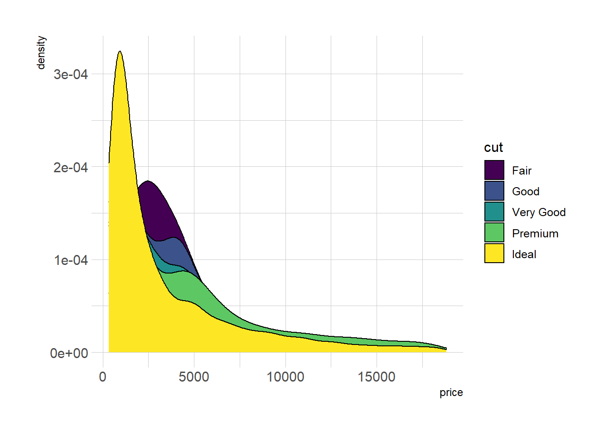

# With transparency (right)
p2 <- ggplot(data=diamonds, aes(x=price, group=cut, fill=cut)) +
geom_density(adjust=1.5, alpha=.4) +
theme_ipsum()
p2
Here is an example with another dataset where it works much better. Groups have very distinct distribution, it is easy to spot them even if on the same chart. Note that it is much better to add group name next to their distribution instead of having a legend beside the chart.
# Load dataset from github
data <- read.table("https://raw.githubusercontent.com/zonination/perceptions/master/probly.csv", header=TRUE, sep=",")
data <- data %>%
gather(key="text", value="value") %>%
mutate(text = gsub("\\.", " ",text)) %>%
mutate(value = round(as.numeric(value),0))
# A dataframe for annotations
annot <- data.frame(
text = c("Almost No Chance", "About Even", "Probable", "Almost Certainly"),
x = c(5, 53, 65, 79),
y = c(0.15, 0.4, 0.06, 0.1)
)
# Plot
data %>%
filter(text %in% c("Almost No Chance", "About Even", "Probable", "Almost Certainly")) %>%
ggplot( aes(x=value, color=text, fill=text)) +
geom_density(alpha=0.6) +
scale_fill_viridis(discrete=TRUE) +
scale_color_viridis(discrete=TRUE) +
geom_text( data=annot, aes(x=x, y=y, label=text, color=text), hjust=0, size=4.5) +
theme_ipsum() +
theme(
legend.position="none"
) +
ylab("") +
xlab("Assigned Probability (%)")
2.2.8 Small Multiple with facet_wrap()
Using small multiple is often the best option in my opinion. Distribution of each group gets easy to read, and comparing groups is still possible if they share the same X axis boundaries.
# Using Small multiple
ggplot(data=diamonds, aes(x=price, group=cut, fill=cut)) +
geom_density(adjust=1.5) +
theme_ipsum() +
facet_wrap(~cut) +
theme(
legend.position="none",
panel.spacing = unit(0.1, "lines"),
axis.ticks.x=element_blank()
)
2.2.9 Stacked Density Chart
Another solution is to stack the groups. This allows to see what group is the most frequent for a given value, but it makes it hard to understand the distribution of a group that is not on the bottom of the chart.
Visit data to viz for a complete explanation on this matter.
# Stacked density plot:
p <- ggplot(data=diamonds, aes(x=price, group=cut, fill=cut)) +
geom_density(adjust=1.5, position="fill") +
theme_ipsum()
p2.2.10 Marginal distribution with ggplot2 and ggExtra
This section explains how to add marginal distributions to the X and Y axis of a ggplot2 scatterplot. It can be done using histogram, boxplot or density plot using the ggExtra library.
2.2.10.1 Basic use of ggMarginal()
Here are 3 examples of marginal distribution added on X and Y axis of a scatterplot. The ggExtra library makes it a breeze thanks to the ggMarginal() function. Three main types of distribution are available: histogram, density and boxplot.
# library
library(ggplot2)
library(ggExtra)
# The mtcars dataset is proposed in R
head(mtcars)
# classic plot :
p <- ggplot(mtcars, aes(x=wt, y=mpg, color=cyl, size=cyl)) +
geom_point() +
theme(legend.position="none")
# with marginal histogram
p1 <- ggMarginal(p, type="histogram")
# marginal density
p2 <- ggMarginal(p, type="density")
# marginal boxplot
p3 <- ggMarginal(p, type="boxplot")p1
p2
p3
2.2.10.2 More Customization
Three additional examples to show possible customization:
- Change marginal plot size with
size. - Custom marginal plot appearance with all usual parameters.
- Show only one marginal plot with
margins = 'x'ormargins = 'y'.
# library
library(ggplot2)
library(ggExtra)
# The mtcars dataset is proposed in R
head(mtcars)
# classic plot :
p <- ggplot(mtcars, aes(x=wt, y=mpg, color=cyl, size=cyl)) +
geom_point() +
theme(legend.position="none")
# Set relative size of marginal plots (main plot 10x bigger than marginals)
p1 <- ggMarginal(p, type="histogram", size=10)
# Custom marginal plots:
p2 <- ggMarginal(p, type="histogram", fill = "slateblue", xparams = list( bins=10))
# Show only marginal plot for x axis
p3 <- ggMarginal(p, margins = 'x', color="purple", size=4)p1
p2
p3
2.3 Histogram
Welcome to the histogram section of the R graph gallery. If you want to know more about this kind of chart, visit data-to-viz.com. If youre looking for a simple way to implement it in R, pick an example below.
2.3.1 GGPLOT2
Histograms can be built with ggplot2 thanks to the geom_histogram() function. It requires only 1 numeric variable as input. This function automatically cut the variable in bins and count the number of data point per bin. Remember to try different bin size using the binwidth argument.
2.3.2 Basic histogram with ggplot2
A histogram is a representation of the distribution of a numeric variable. This document explains how to build it with R and the ggplot2 package. You can find more examples in the histogram section.
2.3.3 Basic Histogram with geom_histogram
It is relatively straightforward to build a histogram with ggplot2 thanks to the geom_histogram() function. Only one numeric variable is needed in the input. Note that a warning message is triggered with this code: we need to take care of the bin width as explained in the next section.
# library
library(ggplot2)
# dataset:
data=data.frame(value=rnorm(100))
# basic histogram
p <- ggplot(data, aes(x=value)) +
geom_histogram()
p
2.3.4 Control Bin Size with binwidth
A histogram takes as input a numeric variable and cuts it into several bins. Playing with the bin size is a very important step, since its value can have a big impact on the histogram appearance and thus on the message youre trying to convey. This concept is explained in depth in data-to-viz.
Ggplot2 makes it a breeze to change the bin size thanks to the binwidth argument of the geom_histogram function. See below the impact it can have on the output.
# Libraries
library(tidyverse)
library(hrbrthemes)
# Load dataset from github
data <- read.table("https://raw.githubusercontent.com/holtzy/data_to_viz/master/Example_dataset/1_OneNum.csv", header=TRUE)
# plot
p <- data %>%
filter( price<300 ) %>%
ggplot( aes(x=price)) +
geom_histogram( binwidth=3, fill="#69b3a2", color="#e9ecef", alpha=0.9) +
ggtitle("Bin size = 3") +
theme_ipsum() +
theme(
plot.title = element_text(size=15)
)
p
2.3.5 Histogram with Several Groups - ggplot2
A histogram displays the distribution of a numeric variable. A common task is to compare this distribution through several groups. This document explains how to do so using R and ggplot2.
2.3.5.1 Several Histograms on the Same Axis
If the number of group or variable you have is relatively low, you can display all of them on the same axis, using a bit of transparency to make sure you do not hide any data.
Note: with 2 groups, you can also build a mirror histogram
# library
library(ggplot2)
library(dplyr)
library(hrbrthemes)
# Build dataset with different distributions
data <- data.frame(
type = c( rep("variable 1", 1000), rep("variable 2", 1000) ),
value = c( rnorm(1000), rnorm(1000, mean=4) )
)
# Represent it
p <- data %>%
ggplot( aes(x=value, fill=type)) +
geom_histogram( color="#e9ecef", alpha=0.6, position = 'identity') +
scale_fill_manual(values=c("#69b3a2", "#404080")) +
theme_ipsum() +
labs(fill="")
p
2.3.6 Using Small Multiple
If the number of group you need to represent is high, drawing them on the same axis often results in a cluttered and unreadable figure.
A good workaround is to use small multiple where each group is represented in a fraction of the plot window, making the figure easy to read. This is pretty easy to build thanks to the facet_wrap() function of ggplot2.
Note: read more about the dataset used in this example here.
# Libraries
library(tidyverse)
library(hrbrthemes)
library(viridis)
library(forcats)
# Load dataset from github
data <- read.table("https://raw.githubusercontent.com/zonination/perceptions/master/probly.csv", header=TRUE, sep=",")
data <- data %>%
gather(key="text", value="value") %>%
mutate(text = gsub("\\.", " ",text)) %>%
mutate(value = round(as.numeric(value),0))
# plot
p <- data %>%
mutate(text = fct_reorder(text, value)) %>%
ggplot( aes(x=value, color=text, fill=text)) +
geom_histogram(alpha=0.6, binwidth = 5) +
scale_fill_viridis(discrete=TRUE) +
scale_color_viridis(discrete=TRUE) +
theme_ipsum() +
theme(
legend.position="none",
panel.spacing = unit(0.1, "lines"),
strip.text.x = element_text(size = 8)
) +
xlab("") +
ylab("Assigned Probability (%)") +
facet_wrap(~text)
p2.3.7 Base R
Of course it is possible to build high quality histograms without ggplot2 or the tidyverse. Here are a few examples illustrating how to proceed.
2.3.8 Two Histograms with Melt Colors
A histogram displays the distribution of a numeric variable. This sections explains how to plot 2 histograms on the same axis in Basic R, without any package.
Histograms are commonly used in data analysis to observe distribution of variables. A common task in data visualization is to compare the distribution of 2 variables simultaneously.
Here is a tip to plot 2 histograms together (using the add function) with transparency (using the rgb function) to keep information when shapes overlap.
#Create data
set.seed(1)
Ixos=rnorm(4000 , 120 , 30)
Primadur=rnorm(4000 , 200 , 30)
# First distribution
hist(Ixos, breaks=30, xlim=c(0,300), col=rgb(1,0,0,0.5), xlab="height",
ylab="nbr of plants", main="distribution of height of 2 durum wheat varieties" )
# Second with add=T to plot on top
hist(Primadur, breaks=30, xlim=c(0,300), col=rgb(0,0,1,0.5), add=T)
# Add legend
legend("topright", legend=c("Ixos","Primadur"), col=c(rgb(1,0,0,0.5),
rgb(0,0,1,0.5)), pt.cex=2, pch=15 )par(
mfrow=c(1,2),
mar=c(4,4,1,0)
)
hist(Ixos, breaks=30 , xlim=c(0,300) , col=rgb(1,0,0,0.5) , xlab="height" , ylab="nbr of plants" , main="" )
hist(Primadur, breaks=30 , xlim=c(0,300) , col=rgb(0,0,1,0.5) , xlab="height" , ylab="" , main="")2.3.9 Boxplot on top of Histogram
This example illustrates how to split the plotting window in base R thanks to the layout function. Contrary to the par(mfrow=...) solution, layout() allows greater control of panel parts.
Here a boxplot is added on top of the histogram, allowing to quickly observe summary statistics of the distribution.
# Create data
my_variable=c(rnorm(1000 , 0 , 2) , rnorm(1000 , 9 , 2))
# Layout to split the screen
layout(mat = matrix(c(1,2),2,1, byrow=TRUE), height = c(1,8))
# Draw the boxplot and the histogram
par(mar=c(0, 3.1, 1.1, 2.1))
boxplot(my_variable , horizontal=TRUE , ylim=c(-10,20), xaxt="n" , col=rgb(0.8,0.8,0,0.5) , frame=F)
par(mar=c(4, 3.1, 1.1, 2.1))
hist(my_variable , breaks=40 , col=rgb(0.2,0.8,0.5,0.5) , border=F , main="" , xlab="value of the variable", xlim=c(-10,20))
2.3.10 Histogram with Colored Tail
This example demonstrates how to color parts of the histogram. First of all, the hist function must be called without plotting the result using the plot=F option. It allows to store the position of each bin in an object (my_hist here).
Those bin borders are now available in the $breaks slot of the object, what allows to build a color vector using ifelse statements. Finally, this color vector can be used in a plot call.
# Create data
my_variable=rnorm(2000, 0 , 10)
# Calculate histogram, but do not draw it
my_hist=hist(my_variable , breaks=40 , plot=F)
# Color vector
my_color= ifelse(my_hist$breaks < -10, rgb(0.2,0.8,0.5,0.5) , ifelse (my_hist$breaks >=10, "purple", rgb(0.2,0.2,0.2,0.2) ))
# Final plot
plot(my_hist, col=my_color , border=F , main="" , xlab="value of the variable", xlim=c(-40,40) )2.3.11 Mirrored Histogram in Base R
The mirrored histogram allows to compare the distribution of 2 variables.
First split the screen with the par(mfrow()) command. The top histogram needs a xaxt="n" statement to discard its X axis. For the second one, inverse the values of the ylim argument to flip it upside down. Use the margin command to adjust the position of the 2 charts.
#Create Data
x1 = rnorm(100)
x2 = rnorm(100)+rep(2,100)
par(mfrow=c(2,1))
#Make the plot
par(mar=c(0,5,3,3))
hist(x1 , main="" , xlim=c(-2,5), ylab="Frequency for x1", xlab="", ylim=c(0,25) , xaxt="n", las=1 , col="slateblue1", breaks=10)
par(mar=c(5,5,0,3))
hist(x2 , main="" , xlim=c(-2,5), ylab="Frequency for x2", xlab="Value of my variable", ylim=c(25,0) , las=1 , col="tomato3" , breaks=10)2.3.12 Histogram without Border
This sections explains how to get rid of histograms border in Basic R. It is purely about appearance preferences. Basically, you just need to add border=F to the hist function to remove the border of histogram bars.
# Create data
my_variable=c(rnorm(1000 , 0 , 2) , rnorm(1000 , 9 , 2))
# Draw the histogram with border=F
hist(my_variable , breaks=40 , col=rgb(0.2,0.8,0.5,0.5) , border=F , main="")2.4 Ridgeline Chart
Welcome in the ridgeline chart section of the gallery. Sometimes called joyplot, this kind of chart allows to visualize the distribution of several numeric variables, as stated in data-to-viz.com. Here are several examples implemented using R and the ridgelines R package.
2.4.0.1 The ggridges Package
In term of code, a ridgeline chart is simply a set of many density plots. Thus, starting by learning the basics of density chart is probably a good idea.
2.4.1 Basic Ridgeline Plot
The ridgeline plot allows to study the distribution of a numeric variable for several groups. This document explains how to build it with R and the ggridges library.
A Ridgelineplot (formerly called Joyplot) allows to study the distribution of a numeric variable for several groups. In this example, we check the distribution of diamond prices according to their quality.
This graph is made using the ggridges library, which is a ggplot2 extension and thus respect the syntax of the grammar of graphic. We specify the price column for the X axis and the cut column for the Y axis. Adding fill=cut allows to use one colour per category and display them as separate groups.
# library
library(ggridges)
library(ggplot2)
# Diamonds dataset is provided by R natively
#head(diamonds)
# basic example
ggplot(diamonds, aes(x = price, y = cut, fill = cut)) +
geom_density_ridges() +
theme_ridges() +
theme(legend.position = "none")
2.4.2 Shape Variation
It is possible to represent the density with different aspects. For instance, using stat="binline" makes a histogram like shape to represent each distribution.
# library
library(ggridges)
library(ggplot2)
library(dplyr)
library(tidyr)
library(forcats)
# Load dataset from github
data <- read.table("https://raw.githubusercontent.com/zonination/perceptions/master/probly.csv", header=TRUE, sep=",")
data <- data %>%
gather(key="text", value="value") %>%
mutate(text = gsub("\\.", " ",text)) %>%
mutate(value = round(as.numeric(value),0)) %>%
filter(text %in% c("Almost Certainly","Very Good Chance","We Believe","Likely","About Even", "Little Chance", "Chances Are Slight", "Almost No Chance"))
# Plot
data %>%
mutate(text = fct_reorder(text, value)) %>%
ggplot( aes(y=text, x=value, fill=text)) +
geom_density_ridges(alpha=0.6, stat="binline", bins=20) +
theme_ridges() +
theme(
legend.position="none",
panel.spacing = unit(0.1, "lines"),
strip.text.x = element_text(size = 8)
) +
xlab("") +
ylab("Assigned Probability (%)")2.4.3 Color Relative to Numeric Value
It is possible to set color depending on the numeric variable instead of the categoric one. (code from the ridgeline R package by Claus O. Wilke)
# library
library(ggridges)
library(ggplot2)
library(viridis)
library(hrbrthemes)
# Plot
ggplot(lincoln_weather, aes(x = `Mean Temperature [F]`, y = `Month`, fill = ..x..)) +
geom_density_ridges_gradient(scale = 3, rel_min_height = 0.01) +
scale_fill_viridis(name = "Temp. [F]", option = "C") +
labs(title = 'Temperatures in Lincoln NE in 2016') +
theme_ipsum() +
theme(
legend.position="none",
panel.spacing = unit(0.1, "lines"),
strip.text.x = element_text(size = 8)
)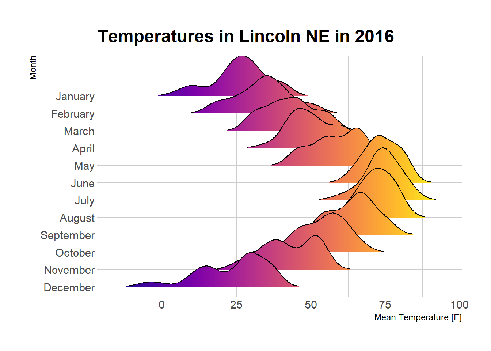
2.5 Violin
Violin plots allow to visualize the distribution of a numeric variable for one or several groups. They are very well adapted for large dataset, as stated in data-to-viz.com. Since group labels need to be read, it makes sense to build an horizontal version: labels become much more readable. This document provide an R implementation using ggplot2 and Base R.
2.5.1 Base R Violin Plot
Violin plots are useful to compare the distribution of several groups. Ggplot2 provides a great way to build them, but the vioplot library is an alternative in case you dont want to use the tidyverse.
The Vioplot library builds the violin plot as a boxplot with a rotated kernel density plot on each side. If you want to represent several groups, the trick is to use the with function as demonstrated below.
# Load the vioplot library
library(vioplot)
# Create data
treatment <- c(rep("A", 40) , rep("B", 40) , rep("C", 40) )
value <- c( sample(2:5, 40 , replace=T) , sample(c(1:5,12:17), 40 , replace=T), sample(1:7, 40 , replace=T) )
data <- data.frame(treatment,value)
# Draw the plot
with(data , vioplot(
value[treatment=="A"] , value[treatment=="B"], value[treatment=="C"],
col=rgb(0.1,0.4,0.7,0.7) , names=c("A","B","C")
))2.5.2 Basic ggplot Violin Plot
Building a violin plot with ggplot2 is pretty straightforward thanks to the dedicated geom_violin() function.
# Library
library(ggplot2)
# create a dataset
data <- data.frame(
name=c( rep("A",500), rep("B",500), rep("B",500), rep("C",20), rep('D', 100) ),
value=c( rnorm(500, 10, 5), rnorm(500, 13, 1), rnorm(500, 18, 1), rnorm(20, 25, 4), rnorm(100, 12, 1) )
)
# Most basic violin chart
p <- ggplot(data, aes(x=name, y=value, fill=name)) + # fill=name allow to automatically dedicate a color for each group
geom_violin()
p2.5.3 Note on Input Format
Ggplot2 expects input data to be in a long format: each row is dedicated to one observation. Your input needs 2 column:
- A categorical variable for the X axis: Needs to be have the class
factor. - A numeric variable for the Y axis: Needs to have the class
numeric.
2.5.3.1 From Long Format
You already have the good format. Its going to be a breeze to plot it with geom_violin() as follow:
# Library
library(ggplot2)
library(dplyr)
# Create data
data <- data.frame(
name=c( rep("A",500), rep("B",500), rep("B",500), rep("C",20), rep('D', 100) ),
value=c( rnorm(500, 10, 5), rnorm(500, 13, 1), rnorm(500, 18, 1), rnorm(20, 25, 4), rnorm(100, 12, 1) ) %>% round(2)
)
head(data)## name value
## 1 A 11.75
## 2 A 4.68
## 3 A 3.22
## 4 A 7.51
## 5 A 18.28
## 6 A 3.34# Basic violin
ggplot(data, aes(x=name, y=value, fill=name)) +
geom_violin()2.5.4 From Wide Format
In this case we need to reformat the input. This is possible thanks to the gather() function of the tidyr library that is part of the tidyverse.
# Let's use the iris dataset as an example:
data_wide <- iris[ , 1:4]
head(data_wide)## Sepal.Length Sepal.Width Petal.Length Petal.Width
## 1 5.1 3.5 1.4 0.2
## 2 4.9 3.0 1.4 0.2
## 3 4.7 3.2 1.3 0.2
## 4 4.6 3.1 1.5 0.2
## 5 5.0 3.6 1.4 0.2
## 6 5.4 3.9 1.7 0.4library(tidyr)
library(ggplot2)
library(dplyr)
data_wide %>%
gather(key="MesureType", value="Val") %>%
ggplot( aes(x=MesureType, y=Val, fill=MesureType)) +
geom_violin()2.5.5 Reorder a variable with ggplot2
Reordering groups in a ggplot2 chart can be a struggle. This is due to the fact that ggplot2 takes into account the order of the factor levels, not the order you observe in your data frame. You can sort your input data frame with sort() or arrange(), it will never have any impact on your ggplot2 output.
This section explains how to reorder the level of your factor through several examples. Examples are based on 2 dummy datasets:
# Library
library(ggplot2)
library(dplyr)
# Dataset 1: one value per group
data <- data.frame(
name=c("north","south","south-east","north-west","south-west","north-east","west","east"),
val=sample(seq(1,10), 8 )
)
# Dataset 2: several values per group (natively provided in R)
# mpg2.5.6 Method 1: the forcats library
The Forecats library is a library from the tidyverse especially made to handle factors in R. It provides a suite of useful tools that solve common problems with factors. The fact_reorder() function allows to reorder the factor. The fact_reorder() function allows to reorder the factor (data$name for example) following the value of another column (data$val here).
# load the library
library(forcats)
# Reorder following the value of another column:
data %>%
mutate(name = fct_reorder(name, val)) %>%
ggplot( aes(x=name, y=val)) +
geom_bar(stat="identity", fill="#f68060", alpha=.6, width=.4) +
coord_flip() +
xlab("") +
theme_bw()
# Reverse side
data %>%
mutate(name = fct_reorder(name, desc(val))) %>%
ggplot( aes(x=name, y=val)) +
geom_bar(stat="identity", fill="#f68060", alpha=.6, width=.4) +
coord_flip() +
xlab("") +
theme_bw()If you have several values per level of your factor, you can specify which function to apply to determine the order. The default is to use the median, but you can use the number of data points per group to make the classification:
# Using median
mpg %>%
mutate(class = fct_reorder(class, hwy, .fun='median')) %>%
ggplot( aes(x=reorder(class, hwy), y=hwy, fill=class)) +
geom_boxplot() +
xlab("class") +
theme(legend.position="none") +
xlab("")
# Using number of observation per group
mpg %>%
mutate(class = fct_reorder(class, hwy, .fun='length' )) %>%
ggplot( aes(x=class, y=hwy, fill=class)) +
geom_boxplot() +
xlab("class") +
theme(legend.position="none") +
xlab("") +
xlab("")
The last common operation is to provide a specific order to your levels, using the fct_relevel() function as follow:
# Reorder following a precise order
p <- data %>%
mutate(name = fct_relevel(name,
"north", "north-east", "east",
"south-east", "south", "south-west",
"west", "north-west")) %>%
ggplot( aes(x=name, y=val)) +
geom_bar(stat="identity") +
xlab("")
p2.5.7 Method 2: Using Dplyr Only
The mutate() function of dplyr allows to create a new variable or modify an existing one. It is possible to use it to recreate a factor with a specific order. Here are 2 examples:
- The first use
arrange()to sort your data frame, and reorder the factor following this desired order. - The second specifies a custom order for the factor giving the levels one by one.
data %>%
arrange(val) %>% # First sort by val. This sort the dataframe but NOT the factor levels
mutate(name=factor(name, levels=name)) %>% # This trick update the factor levels
ggplot( aes(x=name, y=val)) +
geom_segment( aes(xend=name, yend=0)) +
geom_point( size=4, color="orange") +
coord_flip() +
theme_bw() +
xlab("")
data %>%
arrange(val) %>%
mutate(name = factor(name, levels=c("north", "north-east", "east", "south-east", "south", "south-west", "west", "north-west"))) %>%
ggplot( aes(x=name, y=val)) +
geom_segment( aes(xend=name, yend=0)) +
geom_point( size=4, color="orange") +
theme_bw() +
xlab("")
2.5.8 Method 3: the reorder() Function of Base R
In case your an unconditional user of R, here is how to control the order using the reorder() function inside a with() call:
# reorder is close to order, but is made to change the order of the factor levels.
mpg$class = with(mpg, reorder(class, hwy, median))
p <- mpg %>%
ggplot( aes(x=class, y=hwy, fill=class)) +
geom_violin() +
xlab("class") +
theme(legend.position="none") +
xlab("")
p2.5.9 Horizontal Violin Plot with ggplot2
Building a violin plot with ggplot2 is pretty straightforward thanks to the dedicated geom_violin() function. Here, calling coord_flip() allows to flip X and Y axis and thus get a horizontal version of the chart. Moreover, note the use of the theme_ipsum of the hrbrthemes library that improves general appearance.
# Libraries
library(ggplot2)
library(dplyr)
library(tidyr)
library(forcats)
library(hrbrthemes)
library(viridis)
# Load dataset from github
data <- read.table("https://raw.githubusercontent.com/zonination/perceptions/master/probly.csv", header=TRUE, sep=",")
# Data is at wide format, we need to make it 'tidy' or 'long'
data <- data %>%
gather(key="text", value="value") %>%
mutate(text = gsub("\\.", " ",text)) %>%
mutate(value = round(as.numeric(value),0)) %>%
filter(text %in% c("Almost Certainly","Very Good Chance","We Believe","Likely","About Even", "Little Chance", "Chances Are Slight", "Almost No Chance"))
# Plot
p <- data %>%
mutate(text = fct_reorder(text, value)) %>% # Reorder data
ggplot( aes(x=text, y=value, fill=text, color=text)) +
geom_violin(width=2.1, size=0.2) +
scale_fill_viridis(discrete=TRUE) +
scale_color_viridis(discrete=TRUE) +
theme_ipsum() +
theme(
legend.position="none"
) +
coord_flip() + # This switch X and Y axis and allows to get the horizontal version
xlab("") +
ylab("Assigned Probability (%)")
p2.5.10 Violin Plot with included Boxplot and Sample Size in ggplot2
It can be handy to include a boxplot in the violin plot to see both the distribution of the data and its summary statistics. Moreover, adding sample size of each group on the X axis is often a necessary step. Here is how to do it with R and ggplot2.
Building a violin plot with ggplot2 is pretty straightforward thanks to the dedicated geom_violin() function. It is possible to use geom_boxplot() with a small width in addition to display a boxplot that provides summary statistics.
Moreover, note a small trick that allows to provide sample size of each group on the X axis: a new column called myaxis is created and is then used for the X axis.
# Libraries
library(ggplot2)
library(dplyr)
library(hrbrthemes)
library(viridis)
# create a dataset
data <- data.frame(
name=c( rep("A",500), rep("B",500), rep("B",500), rep("C",20), rep('D', 100) ),
value=c( rnorm(500, 10, 5), rnorm(500, 13, 1), rnorm(500, 18, 1), rnorm(20, 25, 4), rnorm(100, 12, 1) )
)
# sample size
sample_size = data %>% group_by(name) %>% summarize(num=n())
# Plot
data %>%
left_join(sample_size) %>%
mutate(myaxis = paste0(name, "\n", "n=", num)) %>%
ggplot( aes(x=myaxis, y=value, fill=name)) +
geom_violin(width=1.4) +
geom_boxplot(width=0.1, color="grey", alpha=0.2) +
scale_fill_viridis(discrete = TRUE) +
theme_ipsum() +
theme(
legend.position="none",
plot.title = element_text(size=11)
) +
ggtitle("A Violin wrapping a boxplot") +
xlab("")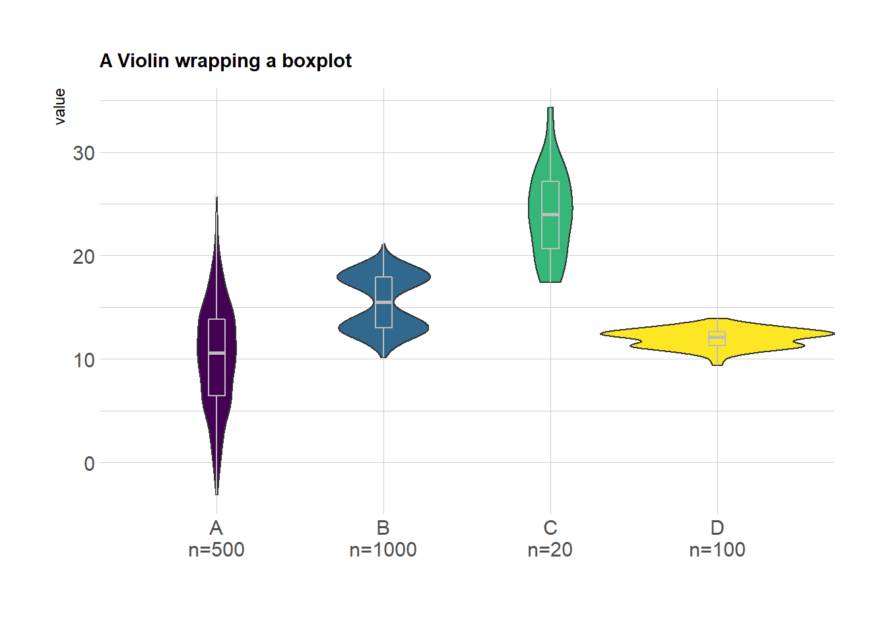
2.5.11 Grouped Violin Chart with ggplot2
This is an extension of the classic violin plot. Here, data are organized in groups and subgroups, allowing to build a grouped violin chart. Chart is implemented using R and the ggplot2 library.
A grouped violin plot displays the distribution of a numeric variable for groups and subgroups. Here, groups are days of the week, and subgroups are Males and Females. Ggplot2 allows this kind of representation thanks to the position="dodge" option of the geom_violin() function. Groups must be provided to x, subgroups must be provided to fill.
# Libraries
library(ggplot2)
library(dplyr)
library(forcats)
library(hrbrthemes)
library(viridis)
# Load dataset from github
data <- read.table("https://raw.githubusercontent.com/holtzy/data_to_viz/master/Example_dataset/10_OneNumSevCatSubgroupsSevObs.csv", header=T, sep=",") %>%
mutate(tip = round(tip/total_bill*100, 1))
# Grouped
data %>%
mutate(day = fct_reorder(day, tip)) %>%
mutate(day = factor(day, levels=c("Thur", "Fri", "Sat", "Sun"))) %>%
ggplot(aes(fill=sex, y=tip, x=day)) +
geom_violin(position="dodge", alpha=0.5, outlier.colour="transparent") +
scale_fill_viridis(discrete=T, name="") +
theme_ipsum() +
xlab("") +
ylab("Tip (%)") +
ylim(0,40)